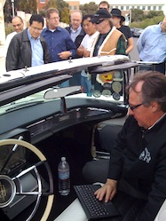

The LincVolt lives!
At JavaOne 2007, Neil Young gave an impassioned talk about why
BluRay matters to artists. He ended the talk with a few comments
about a project he was starting to take a classic Detroit monster
(a 1959 Lincoln Continental) and turn it into an X-Prize capable
hybrid electric car. There was more than a little scepticism in the
audience, but he did it, and he calls it the
LincVolt. And he
brought it to Sun
in Menlo Park to show it off. Piles of realtime Java code under
the hood.